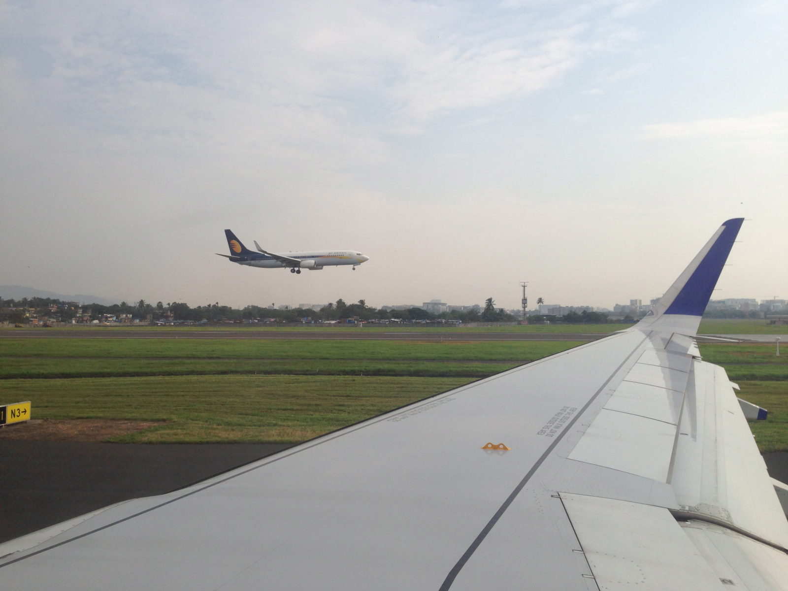

Travel Stories: Edition 1
Planes Galore! Fun at Andaman
Planes Galore is a great and unique collection of aviation photos from various airports around India but primarily the Veer Savarkar airport in Port Blair, Andaman and Nicobar islands.
We went around the airport on a press tour which meant that we could virtually go anywhere in the airport and had access to many places which the regular public don't. The press tour was part of the inauguration of international operations at the airport. We were to click pictures and make videos of the capability of the airport to conduct international operations.
"Planes are fun, the noise, the adrenaline rush, everything about them is fun!"
We flew in on a Saturday afternoon from Chennai, one of the few most serviced airports from Port Blair. Our flight was calm and there was nothing to speak of. Everything was according to plan. When we reached the airport though, we were given a royal treatment! Something that we didn't expect, it was our first invitation as mediapersons. It is often said that, the way you treat journalists writing about you will reflect on how well they make you look when they write about you and that was what was behind the royal treatment.
We were ushered into our fancy hotel suite close to the airport and we were given our own cab to travel whenever and wherever we wanted. The same evening, we were shown around the new international terminal, but to be honest, we weren't that impressed, we had seen better terminals.
The best part of the tour was the tour around the runways and taxiways and getting to see and feel the airplanes land a few feet from our faces. Some journalists in our pack didn't have the guts to stand so close but we being the macho boys (not really) were actually excited, nothing threw us off other than the noise of the jet engines and tire screeches despite the headphones we were given.
A bit before the sun went down, we were taken for a joy ride on a small plane and we got a fair bit of aerial shots of the airport and we were properly thrilled by it.

The next day we got to actually use the new international terminal to fly to nearby Phuket, Thailand. Ironically, Thailand is much closer to Andaman than the Indian mainland we were wondering why the airport didn't serve international flights. It was great to see the clear blue water under us as we rose to the sky and flew to Thailand and then back to Andaman after a 30 minute stop-over. We couldn't spend a lot of time after and we had to leave to mainland India an hour after. We were very happy with the shots we got and I guess it's very evident in our collection.